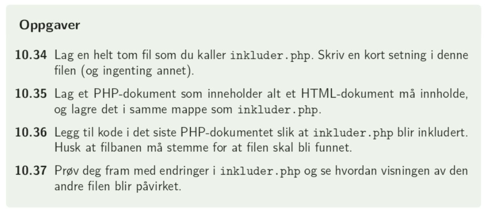

Å sende variabler betyr å lagre en variabel i ett php-dokument og sende den videre til et annet php-dokument. Dette får vi blant annet bruk for dersom vi har et nettsted bestående av flere sider som er lenket sammen eller dersom vi har en nettside med et skjema og skal bearbeide inputverdiene i dette skjemaet.
I stedet for å bruke tid på å sende enkeltvariabler, går vi rett på sending av variabler på sider med skjemaer:
Vi husker html-strukturen for et skjema:
< form method="GET" >
Skriv inn navn: < input type = "text" name = "navn" > < br >
Skriv inn alder: < input type = "number" name = "alder" > < br >
< input type="submit" name="send" value="Send tilbakemelding" >
< /form >
For å kunne sende inndataen videre til et nytt php-dokument, må vi legge til attributtet action i form-taggen. Dette har verdien til den php-fila som skal bearbeide skjemaet:
< form method="GET" action="motta.php">
Selve skjemaet legges inn i en fil som f.eks. heter send.php, som html-kode for < ?php ?>. Se eksemplene send.php og motta.php for denne koden.
I motta.php-fila skal vi behandle det som ble skrevet inn i skjemaet: vi skal lagre verdiene brukeren har skrevet inn som variabler slik at de kan brukes videre. Det første vi må gjøre er å sjekke om send-knappet faktisk er trykket, dette gjør vi med
if(isset($_GET["send"])){}.
Her er if(isset) = hvis trykket
Og $_GET["send"] = send knappen slik at vi vet hvilken knapp vi sjekker om er trykket. GET fordi det er metoden og send fordi name="send"
Mellom {} legges det som skal gjøres inn: vi skal lagre verdiene i skjemaet. Her refererer vi også til inputfeltenes name:
if(isset($_GET["send"])){
$navn=$_GET["navn"];
$alder=$_GET["alder"];
$tilbakemeld=$_GET["tilbakemelding"];
echo "Du heter $navn, er $alder år gammel og synes $tilbakemeld";
}
Det er ikke nødvendig å lage en egen motta-fil: vi kan også skrive ut dataer fra skjemaet i samme php-fil. Se eksempel sendmotta.php for denne koden. Koden for skjemaet er nesten identisk, men vi trenger ikke legge inn action som attributt til form.
Når vi lagrer inputverdier til variabler på denne måten blir de ikke lagret "for alltid", men kan kun brukes direkte til å f.eks. skrive ut. Dersom vi ønsker å lagre inputverdiene permanent, må vi bruke databaser. Dette er det store temaet resten av skoleåret.
s. 123: Oppgave 10.31, 10.32, 10.33
Det finnes flere grunner til å separere php-kode i egne filer:
Når vi etterhvert har php-filer som inneholder mye kode, kan det være praktisk å dele opp koden.
Når vi har kode som går igjen på flere sider kan det være greit å lagre den i en egen fil slik at vi slipper å kopiere den inn på alle sidene.
For å få til dette bruker vi metoden include"filnavn.php". Dette legges inn mellom < ?php og ? > enten i stedet for å skrive kode her eller i tillegg til den koden som skrives.
Som eksempel kan jeg skrive kode som lagrer en header i en php-fil og inkludere den i alle php-filer jeg ønsker. Her kan jeg også legge til annen kode som gir filene samme stilsetting, f.eks. en meny, slik at den er gyldig for alle filene i et nettsted. Se filene header.php og brukheader.php for eksemplet.
s. 124: Oppgave 10.34, 10.35, 10.36, 10.37
